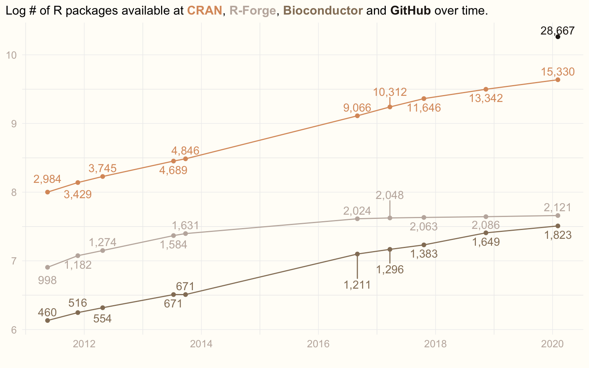

library(tidyverse)
library(curl)
library(ggrepel)
library(scales)
library(ggtext)
library(glue)Making more glamorous graphs in ggplot2
R
ggplot2
visualisation
teaching
Redrawing my old ‘growth of R packages’ plot with ideas from William R. Chase’s ‘The Glamour of Graphics’.
NoteUpdated in 2026
Lightly edited from a 2020 post. The plot is re-rendered with current packages (size became linewidth in ggplot2). The data stop in February 2020, and the scraper is shown but not run, since the repository pages it parsed have changed.
Inspired by William R. Chase’s rstudio::conf 2020 talk “The Glamour of Graphics”, I decided to spruce up an old plot. It is the one I show my students every year to motivate them to learn R: the number of R packages available in various repositories over the years.
From William’s talk I took these lessons:
- Left-align titles.
- Use non-white backgrounds.
- Skip axis labels if not necessary.
- Use as few grid lines as possible.
- Capture the legend in the title.
There is much more in the talk that I do not implement here, for example using professional fonts.
Libraries
Data
I have an ugly function that scrapes CRAN, R-Forge, Bioconductor and, later, also GitHub to count R packages (GitHub is a bit problematic, but hopefully a good proxy). The function repeats code that I should have encapsulated and parametrised. No one is perfect.
interrogate_repos <- function() {
# CRAN
cran_con <- curl::curl(url = 'https://cran.r-project.org/web/packages/index.html')
cran <- paste0(readLines(con = cran_con, n = 20), collapse = '')
cran_pkgs <- stringr::str_match(cran, 'repository features ([0-9]{1,}) available packages')[2]
# R-Forge
rforge_con <- curl::curl(url = 'https://r-forge.r-project.org')
rforge <- paste0(readLines(con = rforge_con, n = 200), collapse = '')
rforge_pkgs <- stringr::str_replace(stringr::str_match(rforge, 'Projects: <strong>([0-9]{1,},[0-9]{1,})</strong>')[2], ',', '')
# Bioconductor
bioconductor_con <- curl::curl(url = 'https://bioconductor.org')
bioconductor <- paste0(readLines(con = bioconductor_con, n = 200), collapse = '')
bioconductor_pkgs <- stringr::str_match(bioconductor, 'Software\">([0-9]{1,}).*software packages.')[2]
# GitHub
github_con <- curl::curl(url = 'https://github.com/search?l=R&q=R+package&type=Repositories')
github <- paste0(readLines(con = github_con, n = 1200), collapse = '')
github_pkgs <- stringr::str_replace(stringr::str_match(github, '([0-9]{1,},[0-9]{1,}) repository results')[2], ',', '')
day <- format(Sys.time(), "%Y-%m-%d")
result <- c(day, cran_pkgs, rforge_pkgs, bioconductor_pkgs, github_pkgs)
names(result) <- c('date', 'CRAN', 'R-Forge', 'Bioconductor', 'GitHub')
return(result)
}From time to time I ran the following code to update my dataset:
prev_data <- read_csv('num_pkgs_data.csv')
today <- interrogate_repos()
if (last(prev_data$date) < today[1]) {
prev_data <- rbind(prev_data, today)
write_csv(x = prev_data, 'num_pkgs_data.csv')
}The dataset looks like this:
prev_data <- read_csv('num_pkgs_data.csv')
prev_data# A tibble: 10 × 5
date cran rforge bioconductor github
<date> <dbl> <dbl> <dbl> <dbl>
1 2011-05-17 2984 998 460 NA
2 2011-11-22 3429 1182 516 NA
3 2012-04-25 3745 1274 554 NA
4 2013-07-11 4689 1584 671 NA
5 2013-09-24 4846 1631 671 NA
6 2016-08-31 9066 2024 1211 NA
7 2017-03-22 10312 2048 1296 NA
8 2017-10-20 11646 2063 1383 NA
9 2018-11-11 13342 2086 1649 NA
10 2020-02-03 15330 2121 1823 28667Data transformation
To plot this sensibly, I convert it from wide to long format:
data <- prev_data |>
pivot_longer(cols = c(cran, rforge, bioconductor, github), names_to = 'repo') |>
mutate(value = as.integer(value))Plotting
I needed some cool colours. On my way home from rstudio::conf 2020 I watched Taika Waititi’s “Jojo Rabbit”, which I found visually appealing. I grabbed a screenshot and, with the Colormind tool, created two palettes from it.
jojo1 <- c('#c0b3aa', '#2b2117', '#9a8268', '#d3a677', '#e1d0ba')
jojo2 <- c('#221c17', '#947e66', '#da9869', '#e0c6a4', '#c1b3ab')And now the most glamorous version of the plot, with the legend living in the title:
cols <- c('bioconductor' = jojo2[2], 'cran' = jojo2[3], 'github' = jojo2[1], 'rforge' = jojo2[5])
title <- glue('Log # of R packages available at',
' <span style="color:{cols[2]}">**CRAN**</span>,',
' <span style="color:{cols[4]}">**R-Forge**</span>,',
' <span style="color:{cols[1]}">**Bioconductor**</span>',
' and',
' <span style="color:{cols[3]}">**GitHub**</span>',
' over time.')
ggplot(data, mapping = aes(x = date, y = log(value), col = repo)) +
geom_point(show.legend = FALSE) +
geom_line(show.legend = FALSE) +
geom_text_repel(aes(label = comma(value)), direction = 'y', vjust = 0.5, show.legend = FALSE) +
scale_colour_manual(values = cols) +
labs(title = title, x = '', y = '') +
theme_minimal() +
theme(panel.grid.major = element_line(colour = '#EEEEEE', linewidth = 0.25),
plot.background = element_rect(fill = '#FFFDF8', colour = '#FFFDF8'),
axis.title = element_text(colour = jojo2[5]),
axis.text = element_text(colour = jojo2[5], size = 10),
axis.title.y = element_blank(),
plot.title = element_markdown(lineheight = 1.5, size = 12),
plot.title.position = 'plot')